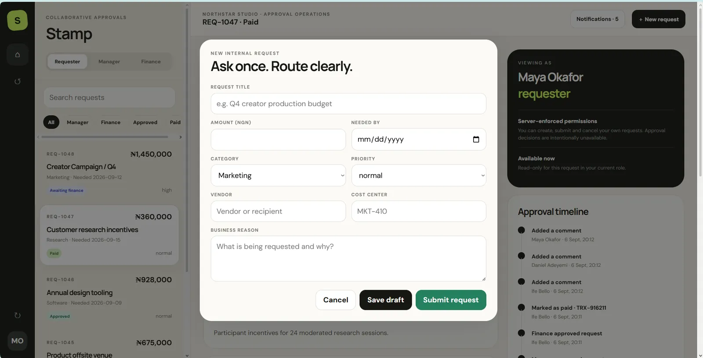
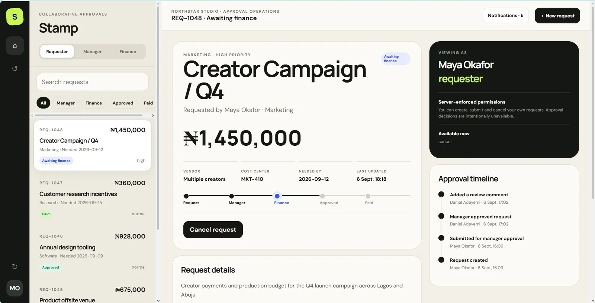
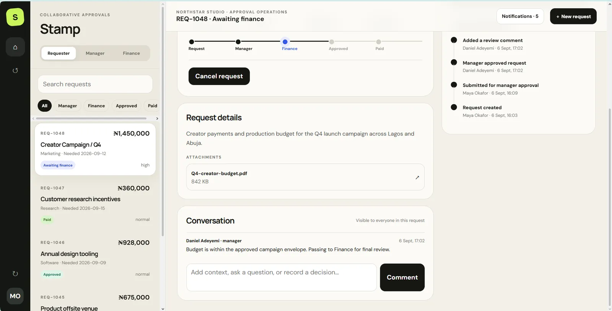
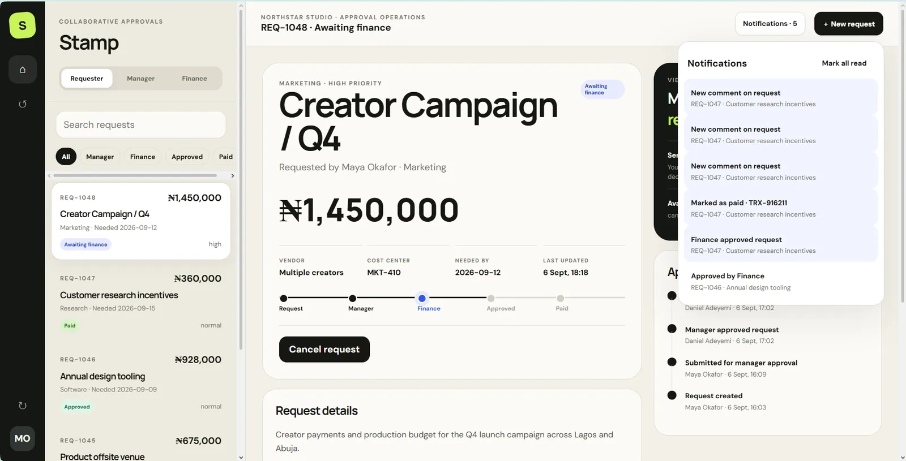
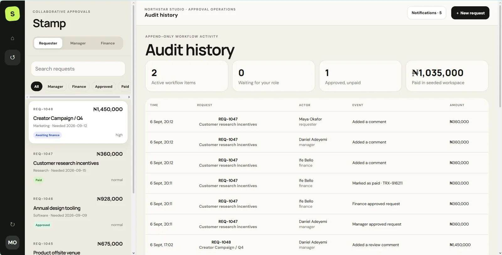

REQUEST
An approval starts as a record with an owner, purpose and current state.


Approval flows become risky when the interface implies permissions that the backend does not actually enforce.
Stamp treats authorization and state transitions as backend rules, with every meaningful action reflected in an audit trail.
The record keeps authority, transition and audit history visible so the interface never implies permission the system does not actually grant.
The interaction makes authorization and transition explicit: request, review, decision, audit.



This section reads the supplied artifacts as product evidence: what the interface has to keep understandable, connected or constrained.
An approval starts as a record with an owner, purpose and current state.
Role-based access determines who is allowed to move the record forward.
Draft, review and approval states are explicit rather than implied by comments alone.
Comments, notifications and history leave a trail of how the decision moved.
A compact contact sheet keeps the page readable; select any frame to inspect it at full size.